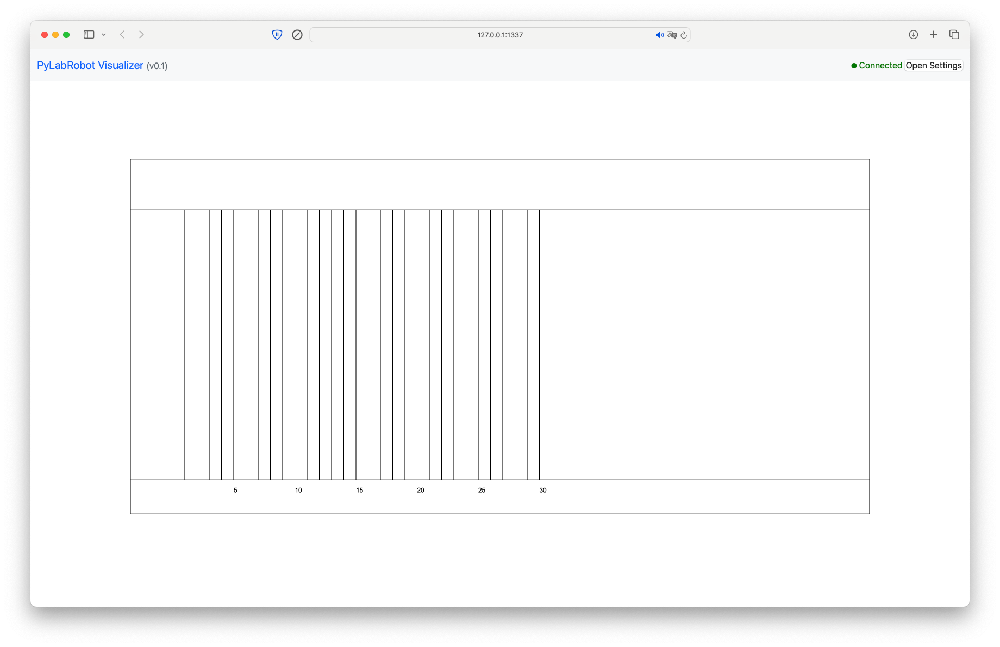
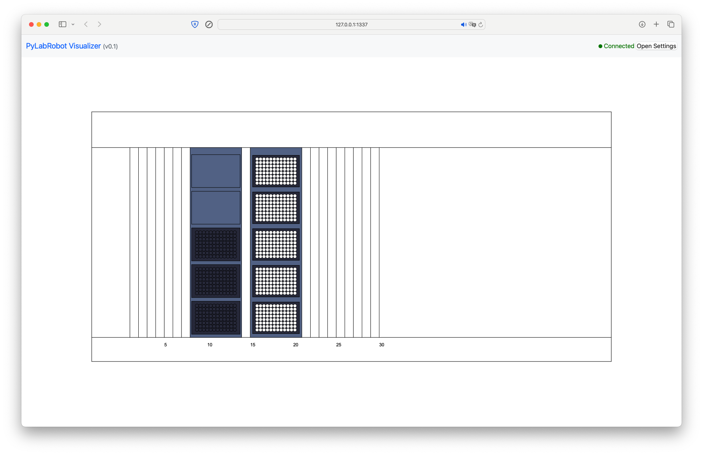
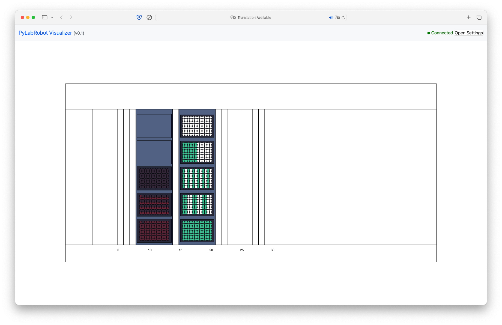

Using the Visualizer#
The Visualizer is a tool that allows you to visualize the a Resource (like LiquidHandler) including its state to easily see what is going on, for example when executing a protocol on a robot or when developing a new protocol.
When using a backend that does not require access to a physical robot, such as the ChatterboxBackend, the Visualizer can be used to simulate a robot’s behavior. Of course, you may also use the Visualizer when working with a real robot to see what is happening in the PLR resource and state trackers.
Setting up a connection with the robot#
As described in the basic liquid handling tutorial, we will use the LiquidHandler class to control the robot. This time, however, instead of using the Hamilton STAR backend, we are using the software-only ChatterboxBackend backend. This means that liquid handling will work exactly the same, but commands are simply printed out to the console instead of being sent to a physical robot. We are still using the same deck.
from pylabrobot.liquid_handling import LiquidHandler
from pylabrobot.liquid_handling.backends import LiquidHandlerChatterboxBackend
from pylabrobot.visualizer.visualizer import Visualizer
from pylabrobot.resources.hamilton import STARLetDeck
lh = LiquidHandler(backend=LiquidHandlerChatterboxBackend(), deck=STARLetDeck())
Calling setup() will print out “Setting up the robot” and also that two resources were assigned: the deck and the trash. Other than that, the chatter box backend has no setup to do.
await lh.setup()
Setting up the liquid handler.
Next, we will create a Visualizer object. The Visualizer expects a Resource, and we will pass the LiquidHandler object to it. This will allow us to visualize the robot’s state and actions.
vis = Visualizer(resource=lh)
await vis.setup()
Websocket server started at http://127.0.0.1:2121
File server started at http://127.0.0.1:1337 . Open this URL in your browser.

Build the deck layout: Assigning plates and tips#
When resources are assigned to the root resource of the Visualizer, in this case lh, they will automatically appear in the visualization.
from pylabrobot.resources import (
TIP_CAR_480_A00,
PLT_CAR_L5AC_A00,
Cor_96_wellplate_360ul_Fb,
hamilton_96_tiprack_1000uL_filter
)
tip_car = TIP_CAR_480_A00(name='tip carrier')
tip_car[0] = tip_rack1 = hamilton_96_tiprack_1000uL_filter(name='tips_01', with_tips=False)
tip_car[1] = tip_rack2 = hamilton_96_tiprack_1000uL_filter(name='tips_02', with_tips=False)
tip_car[2] = tip_rack3 = hamilton_96_tiprack_1000uL_filter(name='tips_03', with_tips=False)
tip_car[3] = tip_rack4 = hamilton_96_tiprack_1000uL_filter(name='tips_04', with_tips=False)
tip_car[4] = tip_rack5 = hamilton_96_tiprack_1000uL_filter(name='tips_05', with_tips=False)
lh.deck.assign_child_resource(tip_car, rails=15)
plt_car = PLT_CAR_L5AC_A00(name='plate carrier')
plt_car[0] = plate_1 = Cor_96_wellplate_360ul_Fb(name='plate_01')
plt_car[1] = plate_2 = Cor_96_wellplate_360ul_Fb(name='plate_02')
plt_car[2] = plate_3 = Cor_96_wellplate_360ul_Fb(name='plate_03')
lh.deck.assign_child_resource(plt_car, rails=8)

Configuring the state of the deck#
As with every PyLabRobot script, you have the option of updating the state of the deck before you actually start your method. This will allow PyLabRobot to keep track of what is going on, enabling features like return_tips() and catching errors (like missed tips) before a command would be executed on the robot. With the visualizer, this state has the additional effect of updating the visualization.
Tips#
Let’s use fill() to place tips at all spots in the tip rack in location 0.
tip_rack1.fill()
You can precisely control the presence of tips using set_tip_state(). This function allows you to set whether there is a tip in each TipSpot.
tip_rack4 = lh.deck.get_resource("tips_04")
tip_rack4.set_tip_state([True]*48 + [False]*48)
tip_rack3.set_tip_state(([True]*8 +[False]*8)*6)
tip_rack2.set_tip_state(([True]*16 +[False]*16)*3)
Liquids#
Adding liquid to wells works similarly. You can use set_well_liquids() to set the liquid in each well of a plate. Each liquid is represented by a tuple where the first element corresponds to the type of liquid and the second to the volume in uL. Here, None is used to designate an unknown liquid.
plate_1.set_well_volumes([500]*96)
plate_2.set_well_volumes([100, 500]*(96//2))
In the visualizer, you can see that the opacity of the well is proportional to how full the well is relative to its maximum volume.

Liquid handling#
Once the layout is complete, you can run the same commands as described in the basic liquid handling tutorial.
It is important that both tip tracking and volume tracking are enabled globally, so that the visualizer can keep track of the state of the tips and the volumes of the liquids.
from pylabrobot.resources import set_tip_tracking, set_volume_tracking
set_tip_tracking(True), set_volume_tracking(True)
(None, None)
Picking up tips#
Note that since we are using the ChatterboxBackend, we just print out “Picking up tips” instead of actually performing an operation. The visualizer will show the tips being picked up.
await lh.pick_up_tips(tip_rack1["A1", "B2", "C3", "D4"])
Picking up tips:
pip# resource offset tip type max volume (µL) fitting depth (mm) tip length (mm) filter
p0: tips_01_tipspot_A1 0,0,0 HamiltonTip 1065 8 95.1 Yes
p1: tips_01_tipspot_B2 0,0,0 HamiltonTip 1065 8 95.1 Yes
p2: tips_01_tipspot_C3 0,0,0 HamiltonTip 1065 8 95.1 Yes
p3: tips_01_tipspot_D4 0,0,0 HamiltonTip 1065 8 95.1 Yes
await lh.drop_tips(tip_rack1["A1", "B2", "C3", "D4"])
Dropping tips:
pip# resource offset tip type max volume (µL) fitting depth (mm) tip length (mm) filter
p0: tips_01_tipspot_A1 0,0,0 HamiltonTip 1065 8 95.1 Yes
p1: tips_01_tipspot_B2 0,0,0 HamiltonTip 1065 8 95.1 Yes
p2: tips_01_tipspot_C3 0,0,0 HamiltonTip 1065 8 95.1 Yes
p3: tips_01_tipspot_D4 0,0,0 HamiltonTip 1065 8 95.1 Yes
Aspirating and dispensing#
await lh.pick_up_tips(tip_rack1["A1"])
Picking up tips:
pip# resource offset tip type max volume (µL) fitting depth (mm) tip length (mm) filter
p0: tips_01_tipspot_A1 0,0,0 HamiltonTip 1065 8 95.1 Yes
await lh.aspirate(plate_1["A2"], vols=[200])
Aspirating:
pip# vol(ul) resource offset flow rate blowout lld_z
p0: 200.0 plate_01_well_A2 0,0,0 None None None
await lh.dispense(plate_2["A1"], vols=[200])
Dispensing:
pip# vol(ul) resource offset flow rate blowout lld_z
p0: 200.0 plate_02_well_A1 0,0,0 None None None
await lh.return_tips()
Dropping tips:
pip# resource offset tip type max volume (µL) fitting depth (mm) tip length (mm) filter
p0: tips_01_tipspot_A1 0,0,0 HamiltonTip 1065 8 95.1 Yes
Aspirating using CoRe 96#
The CoRe 96 head supports liquid handling operations for 96 channels at once. Here’s how to use:
pick_up_tips96()for picking up 96 tips;aspirate96()for aspirating liquid from an entire plate at once;dispense96()for dispensing liquid to an entire plate at once;drop_tips96()for dropping tips to the tip rack.
await lh.pick_up_tips96(tip_rack1)
Picking up tips from tips_01.
await lh.aspirate96(plate_1, volume=100)
Aspirating 100.0 from Plate(name='plate_01', size_x=127.76, size_y=85.48, size_z=14.2, location=Coordinate(000.000, 000.000, -03.030)).
await lh.dispense96(plate_3, volume=100)
Dispensing 100.0 to Plate(name='plate_03', size_x=127.76, size_y=85.48, size_z=14.2, location=Coordinate(000.000, 000.000, -03.030)).
await lh.drop_tips96(tip_rack1)
Dropping tips to tips_01.

Shutting down#
When you’re done, you can stop the visualizer by calling stop(). This will stop the visualization.
await vis.stop()